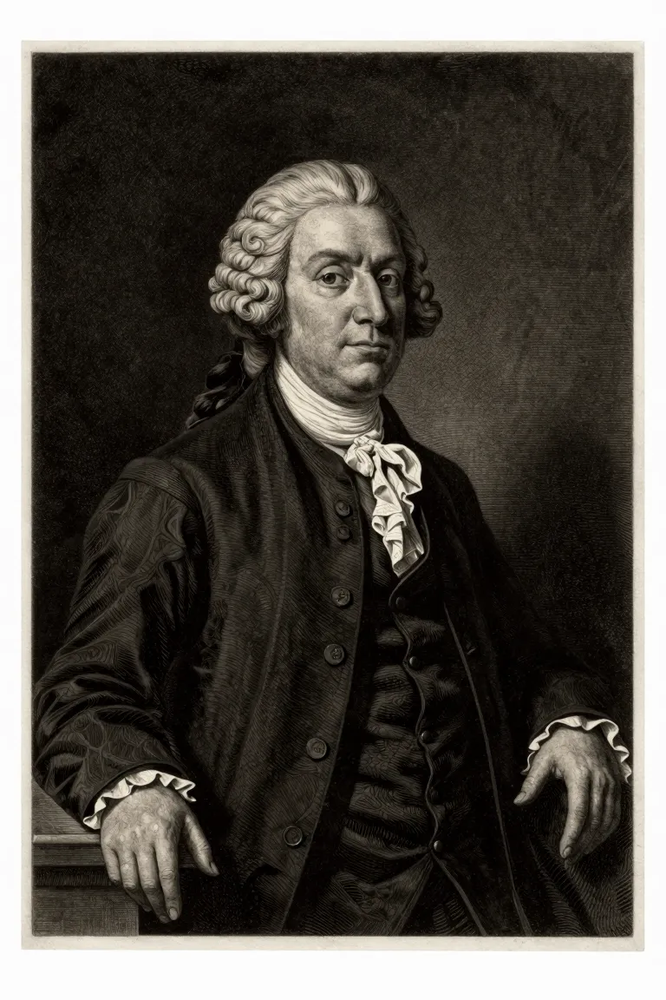

print · 1642–1850 · also: Manière noire, Schabkunst, Black manner, English manner
The plate is rocked with a toothed tool until it holds a full, velvet black; the engraver scrapes and burnishes the lights out of the dark. Ludwig von Siegen made the first in 1642; London engravers used it to reproduce portraits in oil.

Core thesis
If the plate starts black, the artist works from dark to light and gets a tone as soft as paint, with no line.
Design principles
Start from a full black: rock the plate in 20–40 directions until every part holds ink.
Make each light by scraping and burnishing the grain flat; the more the scrape, the lighter the tone.
Model forms in soft, continuous tone; keep lines only for the finest details.
Set the subject against a deep, dark ground and bring the lights out of it.
Keep the darks velvet and slightly warm; avoid a pure white except at the highest lights.